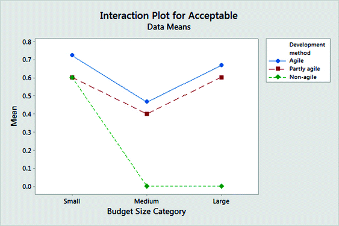
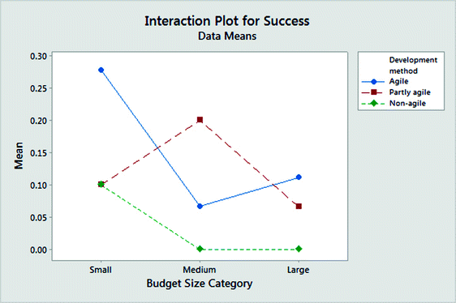
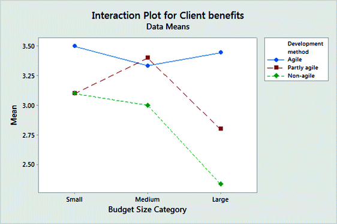
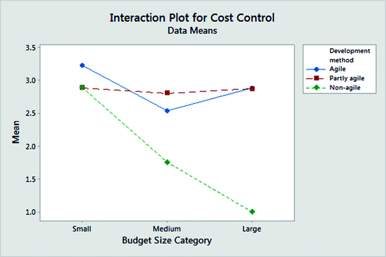
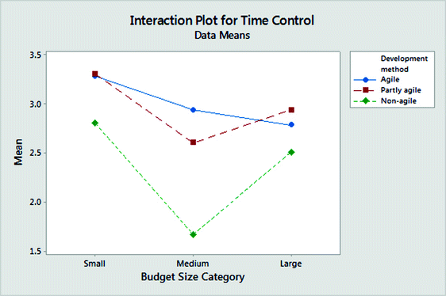

1 Introduction
Much has been written about the extent to which agile methods are suitable for large software projects. An early attempt to summarize what we know about agile methods and their success when used in large software projects, authored by Dybå and Dingsøyr [1], concludes: “The evidence […] suggests that agile methods not necessarily are the best choice for large projects.” Similarly, the review published by Jalali and Wohlin [2] finds: “[…] there is not sufficient evidence to conclude that Agile is efficiently applicable in large distributed projects.” More recent reviews, see for example [3, 4], emphasize challenges related to the use of agile methods for large software projects and, similarly to the previous reviews, report little or no evidence to support the use of agile methods for large software projects. Not only is much of the research literature sceptical about the use of agile methods for large software projects, but several software professionals also seem to think that agile methods are mainly for smaller software projects.1 It is, in addition, not difficult to find examples of failed, large-scale agile software projects.2 A comprehensive review of experience reports and case studies on the challenges and success factors regarding the introduction of agile in large-scale software development can be found in [5].
There are also reported cases where agile methods have been successfully used for large software projects, see for example [6], and reports where agile methods are claimed to have had a positive impact on the outcome of large software projects, see for example [7, 8]. Finally, there are guidelines on how to succeed with large-scale agile projects, such as [9], which claim to be based on the successful completion of large software projects using agile methods.
These diverging results and opinions on the use of agile on large software project may appear to be confusing. There are, however, several reasons why we should not expect consistent results and opinions about the effect of using agile methods on larger software projects:
- We do not have a clear, commonly agreed upon understanding of what it means to work agile. Agile is not a well-defined method, but rather a set of values, principles, and practices. There are consequently many good and bad ways of implementing and using agile methods. There may, in addition, be external factors that complicate the use of good agile, such as the use of fixed price contracts or insufficient involvement by the client [10]. The same problems are present for non-agile methods, which may include an even larger variety of practices. There are good and bad ways of using most software development methods and it is frequently not clear when it is the inexperience and lack of skill in using a method and when it is inherent flaws in a method that contribute to software project failures.
- The development method is only one of many factors affecting the success of a software project. Other factors, especially the level of provider and client competence, may be even more important to explain the outcome of large software projects.
- We do not agree on what a large software project is. A large software project may be defined relatively to those that an organization is used to completing or with absolute measures such as budget size, number of developers, complexity, or number of development teams [11]. In addition, the difference between a large project (e.g., a project consisting of two teams and costing 10 million Euros) and a mega-large project (e.g., a project consisting of ten teams and costing 100 million Euros) may be substantial.
- We see it when we believe it (confirmation bias). People are good at summarizing experience in a way that defends their beliefs. As documented in [12], those who believe in the benefits of agile will tend to find evidence supporting the use of agile even in random project data without any true patterns connecting development method and project success. One example of how to confirm a strong belief in agile (or other) development methods is to categorize a software project as non-agile, or at least not using agile methods properly, if it fails, i.e., if it works it is agile, if it fails it is not true agile.
Despite the above methodological problems we may be able to find out more about the scalability of agile methods by systematically collecting empirical evidence. If large software projects using agile methods typically perform better than projects using other methods, then this supports the claim that agile methods do scale to larger projects. It may give this information even if we do not know exactly how agile was implemented and used by the projects, are unable to use a commonly accepted and good definition of what a large project is, and there are other factors that also matter for success. Many companies may have adopted agile methods just recently, which means that if we find that agile software projects perform worse, but perhaps not much worse, than non-agile as the project size increases, we may not be able to conclude that agile methods will not work on larger software projects. It may then improve as their competence in using the methods improves.
In this paper we empirically compare agile and non-agile software development projects by surveying a set of projects, collecting information about their size (as measured by their budget), their use of development methods, and their degree of success. The research question of our study is:
How is the relationship between project size, as measured by its budget, and success affected by the development method?
As indicated earlier in this section, there are many studies on the use of agile methods on large-scale software projects, and there are many strong opinions about which method is the better to use on large projects. In spite of this, we have been unable to find peer-reviewed research articles empirically analysing size-dependent differences in success of projects using agile and non-agile development methods. A non-peer reviewed study by the Standish Group from 20163 reports that projects using agile development methods performed better than those using waterfall-based methods for small, medium, and large project sizes, and particularly the largest projects. For the largest projects, the failure rate was 42% for waterfall projects and 23% for agile projects. For the smallest project, the difference is smaller, with an 11% failure rate for waterfall and a 4% failure rate for agile projects. This study indicates that agile methods is not only well suited for large projects, but also increasingly more suited as the project size increases. This is, to our knowledge, the only related work we can compare our results with.
2 The Survey
2.1 Survey Design
The respondents of the survey were participants at a seminar on management of software development projects in Oslo, Norway, March 2015.4 All participants were asked to provide information about their last project, including:
- The respondent’s role in the project.
- The project’s outcome in terms of client benefits, cost control, and time control.
- The project’s budget.
- The project’s use of agile practices, and the respondent’s assessment of how agile the project had been.
We received information about 108 projects. An examination of the responses showed that seven of them did not include the required information regarding one or more of the variables used in our analysis. Removing these left 101 valid responses in the data set.
Characteristics of the respondents and their projects include:
- Role: 56% of the respondents were from the client side and 44% from the provider side.
- Client benefits: 35% were categorized as “successful,” 55% as “acceptable,” and 10% as “unsuccessful” or “failed.”
- Cost control: 30% were categorized as “successful,” 32% as “acceptable,” and 38% as “unsuccessful” or “failed.”
- Time control: 37% were categorized as “successful,” 32% as “acceptable,” and 31% as “unsuccessful” or “failed.”
- Budget: 48% of the projects had a budget less than 1 million Euros, 25% between 1 and 10 million Euros, and 27% more than 10 million Euros.5
- Agile practices: When asked to rank their project with respect to how agile it was from 1 (very agile) to 5 (not agile at all), 17% responded with 1, 25% with 2, 40% with 3, 14% with 4, and 4% with 5.
The participants were asked to name the agile practices they had used in their last project. Comparing those descriptions, emphasizing the use of product backlogs, frequent/continuous delivery to client, the use of scrum or similar management processes, autonomous teams, and the use of velocity to track progress, with responses regarding the degree of agility of the project using the scale from 1 to 5, we found it reasonable to cluster the projects as “agile” if the response was 1 or 2, “partly agile” if the response was 3, and “not agile” if the response was 4 or 5. There were, however, no simple connection between the self-assessed degree of agility (using the scale from 1 to 5) and the implemented agile practices. This makes the development category boundaries, especially the boundary between agile and partly agile, to some extent fuzzy and subjective. While this may limit the strength of the analysis, it is clear from the analysis that those categorized as agile on average have more agile practices than those categorized as partly agile. While we believe that this is sufficient for meaningful analyses, it is important to be aware of that degree of agility in our study is based on the respondents subjective assessment.6
Our measure of a project’s level of success used a combination of three success dimensions: client benefits, cost control, and time control. To be categorized as “acceptable”, we require a score of at least “acceptable” on all three dimensions. Fifty-four percent of the projects were categorized as acceptable using this definition. Notice that the inverse of “acceptable” (46% = 100% − 54%) is the set of projects assessed to have a non-acceptable outcome on at least one of the success dimensions, i.e., the set of “problematic” projects. To be categorized as “successful,” we require that all three dimensions should be assessed as “successful.” Only 12% of the projects belonged to that category.
2.2 Limitations
The survey has a number of limitations that it is important to be aware of when interpreting the results, including:
- Representativeness. Our sample consists only of Norwegian software projects and is a convenience sample based on input from people visiting a seminar on software project management. The common use of agile methods in our data set suggests that many of the companies represented by the participants had (possibly much) experience in the use of agile methods. From more in-depth studies of software projects in similar contexts, see [10], and common sense we know that companies tend to have more problems in the initial phase when they introduce agile methods compared to subsequent projects. The level of agile maturity and other largely unknown sample characteristics, may affect how valid it is to extrapolate our results to other context.
- Perception, not measurement: Several of the survey questions, particularly those related to project outcome, are based on the respondents’ perceptions, not measured data. This has some drawbacks, for example, different people may have different viewpoints regarding the same project. It may also have some advantages. The degree of success in time control, for example, may be more meaningfully assessed subjectively. In one context, a 10% time overrun may point to a time control failure, while in another context, the same overrun may be acceptable.
- Role bias. We decided to join the responses of those on the client and the provider side, even though there may have been systematic differences in their responses. For example, those in the client role seem to have been less critical than those in the provider role when assessing the outcome of the projects. Using our measure of acceptable outcomes, those on the client side found 66% of the projects to be acceptable, while the figure was 46% when assessed by those on the provider side. Those on the client and the provider side gave however approximately the same average score regarding client benefits, i.e., 37% of the projects assessed by the clients were successful regarding client benefits, while the figure was 32% when assessed by the providers. If the role bias is not dependent on the degree of use of agile methods, which we believe is the case, joining the responses of the two roles will not affect the direction of the interaction effect reported later in this paper.
- Correlation vs. causation. There may be systematic differences in the non-measured characteristics of the agile and the non-agile software projects. In particular, it may be that the client and/or provider competence was higher for those using one type of development method, e.g., providers and clients using agile methods may have been more competent than those using non-agile methods. This will exaggerate the effect of a development method if the most competent clients and providers are more likely to choose the better development method. As with role bias, the direction of the interaction effects from project size is less likely to be affected by such differences.
- Few observations. There are few projects for several combinations of development method and project size category, in particular for the non-agile projects. The low statistical power means that tests of the statistical significance of the interaction effect on the development method are not feasible. It also implies that there are limitations regarding the robustness of our results and that small to medium large differences in success rates are caused by random variance in outcomes. Our results should consequently be understood as initial, exploratory results to be followed up with more empirical research.
- Size vs. complexity. We categorize project size based on the project’s budget. While the budget is likely to reflect the amount of effort spent, it does not necessarily reflect the complexity of the project. There may consequently be relevant differences between large and simple, and large and complex software projects that our analysis is unable to identify.
2.3 Results
The results section emphasizes key takeaways from our study, especially those related to the connection between project size, development method and project outcome.
Table 1 gives the proportion of observations per budget and development method category. It shows that agile and partly agile methods are frequently used even for the largest projects. They are used in 33% and 56% of the largest projects, respectively. While this does not say anything about the usefulness or harm of using agile methods as project size increases, it documents that many of the software professionals involved considered agile and partly agile development methods to be useful for larger projects. Notice the increase in use of partly agile as the project size increases from medium to large. This may suggest that some software professionals believe less in working fully agile when projects get large.
Table 1.
Proportion use of development method per budget size category
Budget size | Agile | Partly agile | Not agile | # projects |
|---|---|---|---|---|
Small | 37% (18) | 42% (20) | 21% (10) | 48 |
Medium | 58% (15) | 19% (5) | 23% (6) | 26 |
Large | 33% (9) | 56% (15) | 11% (3) | 27 |
# projects | 42 | 40 | 19 | 101 |
Table 2 and Figs. 1, 2, 3, 4 and 5 show the interacting effect of development methods on the connection between project size and:
Table 2.
Success with use of development method per budget size category
Budget size | Agile | Partly agile | Not agile |
|---|---|---|---|
Total success (% acceptable)
| |||
Small | 72% | 60% | 60% |
Medium | 46% | 40% | 0% |
Large | 67% | 60% | 0% |
Total success (% successful)
| |||
|---|---|---|---|
Small | 28% | 10% | 10% |
Medium | 7% | 20% | 0% |
Large | 11% | 7% | 0% |
Client benefits (mean score)
| |||
|---|---|---|---|
Small | 3.5 | 3.1 | 3.1 |
Medium | 3.3 | 3.4 | 3.0 |
Large | 3.4 | 2.8 | 2.3 |
Cost control (mean score)
| |||
|---|---|---|---|
Small | 3.2 | 2.9 | 2.9 |
Medium | 3.5 | 2.8 | 1.8 |
Large | 3.4 | 2.9 | 1.0 |
Time control (mean score)
| |||
|---|---|---|---|
Small | 3.3 | 3.3 | 2.8 |
Medium | 2.9 | 2.6 | 1.7 |
Large | 2.8 | 2.9 | 2.5 |

Fig. 1.
Proportion of acceptable projects

Fig. 2.
Proportion of successful projects

Fig. 3.
Client benefits

Fig. 4.
Cost control

Fig. 5.
Time control
The scores of the success dimensions are coded with 4 for successful, 3 for acceptable, 2 for unsuccessful, and 1 for failed projects. This scale is, according to measurement theory, an ordinal scale. We believe, nevertheless, that the mean scores (which strictly speaking require at least an interval scale) give a good indication of the typical outcome regarding client benefits, cost control, and time control.
Our results do not support the claim that projects using agile or partly agile methods do worse than non-agile methods on larger projects. Quite the opposite, the data indicates that large projects using agile or partly agile methods were more likely to be assessed as acceptable than medium large projects using these methods. The non-agile projects performed reasonably well for the smallest projects, just a little worse than the agile and partly agile projects, but very badly on the medium and large software projects. In fact, among the non-agile projects of medium and large size, there were no projects in our data set that met the criterion of being perceived acceptable or better on all success criteria. Although consisting of a small sample, only nine projects used non-agile methods for medium and large projects; this weakly indicates that it is non-agile rather than agile methods that have most problems with larger software projects. This result—i.e., that non-agile methods score relatively poorly compared to agile projects and that the performance difference increases as the project size increases—is similar to that reported in the Standish Group’s Chaos Report for 2016.
For most of the measures, there were not much difference in the assessed outcome for projects using agile and only partly agile. The most notable exceptions were projects assessed to be successful in all three dimensions (Fig. 2), wherein agile performed better than partly agile for large, but worse for medium large projects.
3 Discussion and Conclusion
There are reasonable arguments both in favour and against good performance of agile methods on large projects. An example of an argument in favour of their use is that it is increasingly more unlikely that requirements will remain stable as the size of the software project increases. The understanding of needs is likely to change during the course of the project, and there will most likely be external changes leading to requirement changes. Agile development methods, implementing a process where change is a more integrated part, may consequently be better able to deal with the high requirement volatility of many large projects [10, 14]. An example of an argument sometimes used against the use of agile methods on large software projects is that the lack of upfront planning and architectural thinking, make projects more risky with increasing size.7 Consequently, it is possible to analytically argue in favour of both agile and more plan-driven, non-agile software development methods. To find out which argumentation in practice is the stronger, and whether agile methods typically are good for large projects, requires empirical evidence.
The results from this study do this and provide evidence about how projects with agile practices perform on important success criteria. As pointed out in Sect. 2.2 there are several threats to the validity of our results, but the results do give some evidence in support of that the typical medium and large software projects using agile practices perform acceptably on essential success criteria. This was not the case for typical software projects using non-agile methods in our data set. Consequently, our data suggests that the question is not so much whether agile methods work well for large software projects, but rather how well non-agile software development methods work for such projects. Large projects are inherently risky, and our data suggests that the failure risk is reduced rather than increased with the use of agile methods instead of non-agile methods.

Open Access This chapter is licensed under the terms of the Creative Commons Attribution 4.0 International License (http://creativecommons.org/licenses/by/4.0/), which permits use, sharing, adaptation, distribution and reproduction in any medium or format, as long as you give appropriate credit to the original author(s) and the source, provide a link to the Creative Commons license and indicate if changes were made.
The images or other third party material in this book are included in the book's Creative Commons license, unless indicated otherwise in a credit line to the material. If material is not included in the book's Creative Commons license and your intended use is not permitted by statutory regulation or exceeds the permitted use, you will need to obtain permission directly from the copyright holder.
References
1.
Dybå, T., Dingsøyr, T.: Empirical studies of agile software development: a systematic review. Inf. Softw. Technol. 50(9), 833–859 (2008)Crossref
2.
Jalali, S., Wohlin, C.: Global software engineering and agile practices: a systematic review. J. Softw. Evol. Process 24(6), 643–659 (2012)Crossref
3.
Khalid, H., et al.: Systematic literature review of agile scalability for large scale projects. Int. J. Adv. Comput. Sci. Appl. (IJACSA) 6(9), 63–75 (2015)
4.
Turk, D., France, R., Rumpe, B.: Limitations of agile software processes. arXiv preprint arXiv:1409.6600 (2014)
5.
Dikert, K., Paasivaara, M., Lassenius, C.: Challenges and success factors for large-scale agile transformations: a systematic literature review. J. Syst. Softw. 119, 87–108 (2016)Crossref
6.
Dingsøyr, T., et al.: Exploring software development at the very large-scale: a revelatory case study and research agenda for agile method adaptation. Empir. Softw. Eng. 23, 490–520 (2016)Crossref
7.
Lagerberg, L., et al.: The impact of agile principles and practices on large-scale software development projects: a multiple-case study of two projects at ericsson. In: ESEM 2013. IEEE, Baltimore (2013)
8.
Ebert, C., Paasivaara, M.: Scaling agile. IEEE Softw. 34(6), 98–103 (2017)Crossref
9.
Elshamy, A., Elssamadisy, A.: Applying agile to large projects: new agile software development practices for large projects. In: Concas, G., Damiani, E., Scotto, M., Succi, G. (eds.) XP 2007. LNCS, vol. 4536, pp. 46–53. Springer, Heidelberg (2007). https://doi.org/10.1007/978-3-540-73101-6_7Crossref
10.
Jørgensen, M., Mohagheghi, P., Grimstad, S.: Direct and indirect connections between type of contract and software project outcome. Int. J. Proj. Manag. 35(8), 1573–1586 (2017)Crossref
11.
Dingsøyr, T., Fægri, T.E., Itkonen, J.: What Is large in large-scale? A taxonomy of scale for agile software development. In: Jedlitschka, A., Kuvaja, P., Kuhrmann, M., Männistö, T., Münch, J., Raatikainen, M. (eds.) PROFES 2014. LNCS, vol. 8892, pp. 273–276. Springer, Cham (2014). https://doi.org/10.1007/978-3-319-13835-0_20Crossref
12.
Jørgensen, M.: Myths and over-simplifications in software engineering. Lect. Notes Softw. Eng. 1(1), 7–11 (2013)Crossref
13.
Jørgensen, M., Moløkken-Østvold, K.: How large are software cost overruns? A review of the 1994 CHAOS report. Inf. Softw. Technol. 48(4), 297–301 (2006)Crossref
14.
Jørgensen, M.: A survey on the characteristics of projects with success in delivering client benefits. Inf. Softw. Technol. 78, 83–94 (2016)Crossref
Footnotes
1
For an example of an opinion-based argumentation of why agile is not useful for large projects, see blog.inf.ed.ac.uk/sapm/2014/02/14/agile-methodologies-in-large-scale-projects-a-recipe-for-disaster/. This blog post concludes that “Large-scale development projects are serious business: agile development has no place here.”
2
See, for example, the UK National Audit Office report: www.nao.org.uk/wp-content/uploads/2013/09/10132-001-Universal-credit.pdf. It is from the report not clear to what extent they think that it was agile development itself, the actual implementation and use of agile or the project’s lack of experience with the use of agile that contributed to the failure of the project.
3
There are reasons to be sceptical about the results published by the Standish Group; see our comments on their survey methods on a previous survey in [13]. In its 2016 report the Standish Group (www.standishgroup.com), improved the definition of success to include not only being on time, on cost, and with the specified functionality, but also that the project delivers satisfactory results (blog.standishgroup.com/post/23). Satisfactory results include, they claim, client value. This improvement, given that it is properly integrated in their survey and that they have improved their sampling of projects, may make their recent results more valid and useful.
4
Results from this survey have not been published earlier, but the design and project performance measures are similar to those in the survey published in [14].
5
The original survey was in Norwegian and used Norwegian Kroner (NOK) as currency. The Euro-values are the approximate values corresponding to the NOK-values.
6
The set of agile practises, combined with the project’s own assessment of degree of agility, of a project and other project data used in the analyses will be sent to interested readers upon request to the author.
7
See for example: www.6point6.co.uk/an-agile-agenda, which predicts that UK is wasting 37 billion GBP annually on failed agile projects. This number is based on a survey of CIOs, suggesting a 12% complete failure rate of agile projects. They did not calculate the waste on failed non-agile projects.